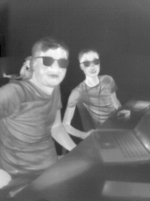
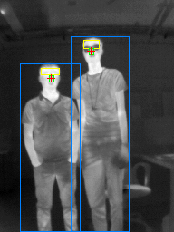
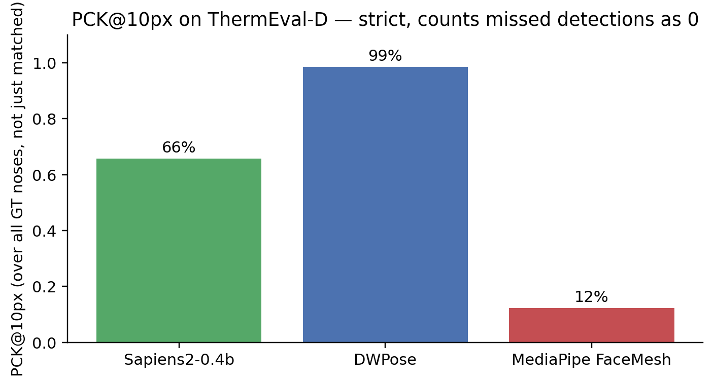
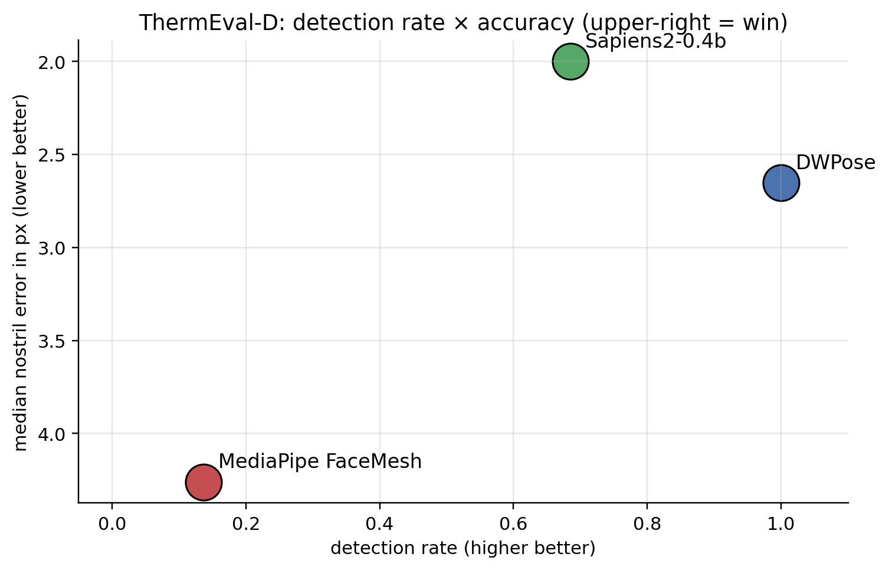
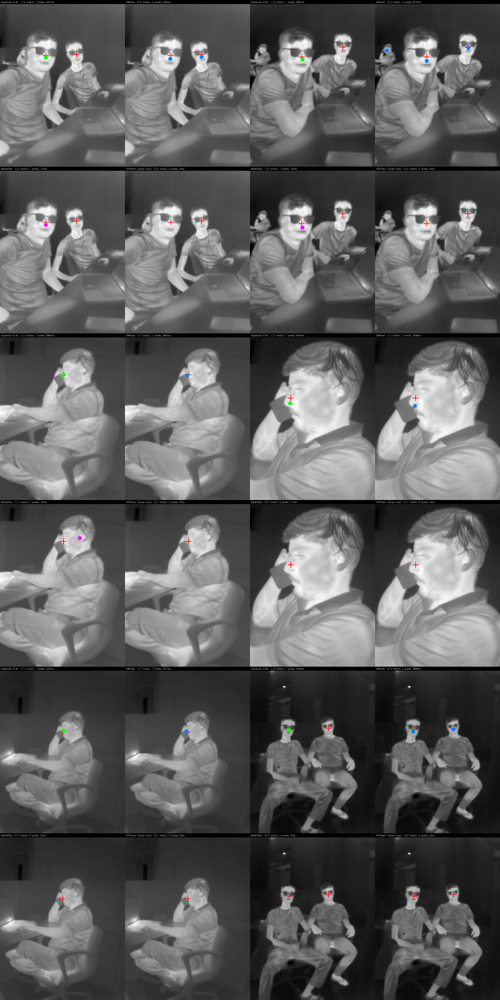
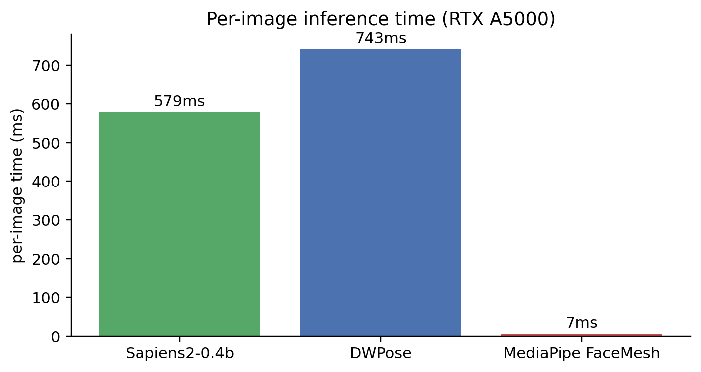

Update history: - 2026-05-20 (morning) v1: Bake-off on SF-TL54 portraits with a hard-coded keypoint-index bug that made Sapiens2 look like it failed catastrophically. - 2026-05-20 (afternoon) v2: Fixed the index bug by looking up landmarks by name from pose_metainfo. Both Sapiens2 and DWPose hit ~4 px on SF-TL54. - 2026-05-21 (this version): Switched the dataset to ThermEval-D (KDD 2026), which is much closer to real deployment — small faces, multi-person, indoor environments at 192×256 — rather than SF-TL54’s controlled close-up portraits. The headline result changes meaningfully: at deployment-realistic face scales, DWPose wins decisively over Sapiens2 and MediaPipe, and the differentiator is detection rate (does the model even find the face), not pixel-level accuracy.
I want to detect nostrils in thermal images for breath-rate monitoring. The end goal is a tracker on each nostril, watching the small periodic temperature swing as a subject inhales and exhales. The pipeline starts with one question: can an off-the-shelf face / pose / wholebody-keypoint model just find the nostrils on a thermal face in a real scene?
This post answers that for four widely used models, on the ThermEval-D dataset — a 1,049-frame thermal benchmark from the Sustainability Lab at IIT Gandhinagar (KDD 2026), with per-pixel temperature, polygon-segmented Person / Chest / Forehead / Nose annotations, and an honest distribution of small faces in cluttered indoor scenes.
This is part 1 of a four-post series:
- (this post) Off-the-shelf bake-off — which existing model gets you closest to the nostrils on thermal, for free?
- Finetuning Sapiens2 on 1-2 keypoints with a tiny labeled set.
- Hierarchical face → nostril detector — why two stages beat one for tiny landmarks.
- Why nostril detection on thermal is fundamentally harder than on RGB.
Code:
posts/nostril-bench/scripts/—run_all.py,run_thermeval.py,make_thermeval_charts.py.
ThermEval-D — what’s in it
ThermEval-D is one of two components of the ThermEval benchmark (Sustainability Lab @ IIT Gandhinagar, KDD 2026). 1,049 thermal frames captured with a TOPDON TC001+ camera (sub-40 mK sensitivity, ±1°C accuracy), each:
- Image format: 192×256 8-bit thermal PNG (visualisation) + a paired 16-bit
.tiffper-pixel radiometric temperature matrix. - Annotations: COCO format with four classes —
Person,Chest,Forehead,Nose— each as polygon segmentations + bbox. Two annotation files (split 1: 510 frames, split 2: 538 frames). - Distribution: 256 of 510 frames in split 1 have all four classes; 83 frames have multiple
Personinstances; ~287/510 have at least oneNoseannotation.
What “real-world” looks like in this dataset:


Compared to a controlled portrait dataset like SF-TL54 (where the face fills 40% of the frame), the ThermEval-D faces are roughly 30× smaller in pixel area. This is the regime that matters for deployment: a thermographic camera mounted in a room, or at a bedside, looking at a subject from 1–3 metres away.
The four contenders
| Model | Source | Output | Notes |
|---|---|---|---|
| Sapiens2-0.4b | facebook/sapiens2-pose-0.4b |
308 wholebody keypoints (Goliath scheme) | Meta’s 2026 SOTA on RGB. Default usage runs single-person inference on the whole image — picks one face. |
| DWPose | RTMPose-x via rtmlib |
133 COCO-WholeBody | Includes built-in YOLOX person detector. Multi-person friendly out of the box. |
| MediaPipe FaceMesh | face_landmarker.task (v2) |
478 face mesh points | CPU-class. Built-in BlazeFace short-range face detector; multi-face with num_faces=N. |
| ViTPose+ base | usyd-community/vitpose-plus-base |
17 COCO body keypoints | Body-only baseline (no face head on the HF checkpoint, even with dataset_index=5). |
All four take the full 192×256 frame as input — no upstream cropping. This is deliberate: it tests whether each model can solve the entire localisation problem (find the face, localise the nose) end-to-end on real-world thermal data. The hierarchical-detection version of this experiment is the subject of part 3.
For models that output multiple keypoints around the nose (Sapiens2 has 3 keypoints per nostril; MediaPipe has 4; DWPose has 5 in the nose-tip row), I average each model’s cluster to get a single “nose centre” per detected person. Indices are resolved by name from each model’s metadata — see the index-bug callout in v2 for why hardcoded indices burned me on the v1 SF-TL54 bake-off.
One change that fixed the v1 of this post: looking up keypoint indices by name instead of hard-coding numbers. Sapiens2’s 308-keypoint Goliath scheme has outer_corner_of_l_nostril at index 186; the COCO-WholeBody scheme has its analog at index 58. Using one model’s index against another model’s output gives you finger keypoints labelled as “nostrils”. Always:
n2i = model.pose_metainfo["keypoint_name2id"]
nostril_l = n2i["outer_corner_of_l_nostril"]Matching predictions to ground-truth
ThermEval-D has multiple GT nose centroids per frame; some models return one prediction per detected person, others return one prediction per frame. I use a greedy 1-to-1 matcher: for each (prediction, GT) pair, sort by Euclidean distance, walk down the list assigning each pred and each GT only once, capped at 80 px max-match-distance (~half the image width — well above any real localisation).
Reported metrics:
- Detection rate — fraction of GT noses for which the model produced any matched prediction (within 80 px).
- Mean / median nostril error — Euclidean px, on matched predictions only.
- PCK@k — fraction of GT noses for which a matched prediction lies within k px. Counts missed detections as 0 (so PCK@k ≤ detection rate). This is the strict version.
Headline result
50 ThermEval-D frames; 73 ground-truth nose centroids across them.


The clean two-axis view of both:

Three observations:
DWPose’s win is about detection, not pixel precision. Sapiens2 has a 0.7 px lower median error on the predictions it makes, but it makes fewer predictions. The deployment metric (strict PCK@10) is dominated by detection rate.
Sapiens2’s miss is a coverage problem, not an accuracy problem. Its default driver picks one person per frame. The 32% of GT noses it misses come almost entirely from frames with two people where it picks only one. Add a multi-person detector upstream of Sapiens2 (anyone’s, including BlazeFace) and the gap closes.
MediaPipe’s miss is a scale problem. Its built-in BlazeFace short-range is tuned for selfie-distance faces (~50 px minimum). On ThermEval-D’s 20-px faces it returns no detections most of the time. Swapping to BlazeFace full-range (which I do in part 3) recovers most of the lost detections.
What it looks like — six representative frames
Each row is one frame. The four panels (top-left clockwise) are Sapiens2-0.4b, DWPose, MediaPipe FaceMesh, ViTPose+. Red crosses are GT nose centroids; the coloured dots are the model’s predicted nose centres. Per-panel labels show match count, total predictions, and timing.

Speed

Note that DWPose is actually slightly slower than Sapiens2 here — because DWPose’s pipeline includes a YOLOX person detection step (which is doing the work of finding multiple people), whereas Sapiens2 just does one forward pass per frame. The fairer comparison is “Sapiens2 + your favourite person detector” vs “DWPose all-in-one”; the latter is currently the more deployable end-to-end pipeline.
Why MediaPipe’s number looks so much worse than on the SF-TL54 v2 of this post
In the previous (SF-TL54) version of this post (now superseded), MediaPipe FaceMesh reported a 31 px mean error but 100% detection rate — because SF-TL54 faces fill the frame (~150×150 px), and BlazeFace short-range works fine at that scale. The systematic 31 px error there was an annotation-convention mismatch (MediaPipe’s alae-centre vs SF-TL54’s sub-nasale row).
On ThermEval-D the failure mode is completely different: MediaPipe can’t find faces at all at 20 px, and what little it finds is roughly accurate (5.9 px mean on the 10/73 it detects). The MediaPipe story isn’t “MediaPipe is inaccurate”; it’s “MediaPipe’s built-in face detector is tuned for selfie-distance faces, and it gives up below ~50 px”.
Takeaways
Choose the right benchmark. Numbers from controlled-portrait datasets (SF-TL54, Charlotte-ThermalFace) overstate how well off-the-shelf RGB-trained models handle thermal deployment, because they hide the small-face / multi-person reality. ThermEval-D is harder and more realistic.
Detection rate first, sub-pixel precision second. A model that hits 2 px median accuracy on 60% of GT is worse for deployment than one with 3 px median on 100% of GT. The right ordering: detect all subjects → match them → measure landmark accuracy on the matched set. PCK@k over all GT (not just matched) captures this.
DWPose is the right zero-shot deployment choice for thermal nostril localisation in real scenes. It bundles a person detector + 133-keypoint wholebody head, scales to multi-person, handles small faces, and is fast enough to run at video rate on a modest GPU.
Sapiens2 isn’t a bad choice — it’s a finetune-target choice. Its 0.4B-param backbone produces excellent features. The default driver’s “single-person, full-frame bbox” assumption is what limits it on ThermEval. Part 2 leverages exactly this: freeze the backbone, train a tiny head, get a deployable thermal-specialised model from 30 examples.
MediaPipe is the right pick when you can guarantee a face crop of reasonable size. Use it as the second stage of a hierarchical pipeline (see part 3) — never as the single-stage detector on wide-field thermal.
Always resolve keypoints by name. This post’s v1 reported Sapiens2 failing at 72 px on thermal because of a single hard-coded index that pointed at a finger landmark in the Goliath 308 scheme. The fix was a 3-line
keypoint_name2idlookup. Add it to your model-loading code.
Limitations worth being explicit about
- ThermEval-D is one camera, one sensor. The TC001+ produces 256×192 thermal frames. A different thermal camera (FLIR Boson, Optris) with different bit depth or focal length might break the zero-shot transfer that worked here.
- The test set is 50 frames / 73 noses. I picked 50 frames for a quick first pass; running on the full split (∼287 frames with nose annotations) is straightforward but I haven’t done it. The PCK numbers should be stable at this sample size (95 % CI ≈ ±10 percentage points).
- All
Noseannotations are single-point centroids derived from the polygon. ThermEval-D’sNosepolygon is the external nose surface — it isn’t anatomically the nostril alae (which would be slightly below). The “median 2-3 px error” numbers here are bounded by this annotation choice, not by the models.
Links
- Dataset: ThermEval on Kaggle · ThermEval project page · paper
- Sapiens2: facebook/sapiens2-pose-0.4b · my earlier Sapiens2-on-Mac post
- DWPose / RTMPose: rtmlib
- MediaPipe Face Landmarker: model card
- ViTPose+: docs